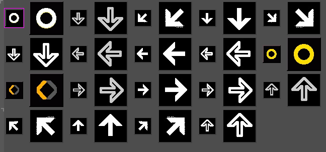

My 2011 Lispy Game Jam Postmortem
I didn't feel well for several days this week, so I did not get to a playable stage with Puzzle Dance Party Extreme. But I did make some solid progress:
- New arrow graphics to accommodate dance steps using all 8 directions on the pad: 
- Revised the existing dance pad code: source code at github
- Defined a lisp list representation for dance moves that will support transformation and algorithmic generation of dance steps. (See github code link or this blog post.)
- A sketch of some new music for the dance game: hosted at soundcloud
- Identified some un-used music in my library that could also be added to the game.
- Began working on a CFFI binding for MikMod in order to bring some algorithmic composition and audio synthesis ideas into the project, as well as provide compatibility with standard XM and XI files.
The gameplay design came into clearer focus during all this work, and I'm really inspired by where Puzzle Dance Party Extreme seems to be going. Here's the pitch:
- Falling blocks with dance moves (i.e. sequences of arrows) on them.
- There will often be more than one block, offering an element of choice.
- The music actually responds to both the player's choice of blocks and step accuracy.
- Provided some example dance moves matching a song, the game can improvise steps for you via context-free grammars or various transformations (rotation, reflection).
- Compatible with most standard dance pads, but with significantly different play from DDR (improvisation, algorithmic music/steps.)
- (Future) USB camera support for Hands + Feet mode.
Thanks again everyone for a fun game jam!